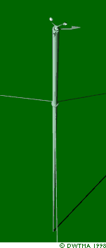
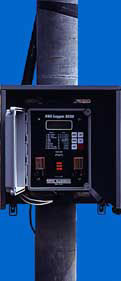

Wind Speed Measurement in Practice

 The best way of measuring wind speeds at a prospective wind turbine
site is to fit an anemometer to the top of a mast which has the same height
as the expected hub height of the wind turbine to be used. This way one
avoids the uncertainty involved in recalculating the wind speeds to a different
height.
The best way of measuring wind speeds at a prospective wind turbine
site is to fit an anemometer to the top of a mast which has the same height
as the expected hub height of the wind turbine to be used. This way one
avoids the uncertainty involved in recalculating the wind speeds to a different
height.
 By fitting the anemometer to the top of the mast one minimises
the disturbances of airflows from the mast itself. If anemometers are placed
on the side of the mast it is essential to place them in the prevailing
wind direction in order to minimise the wind shade from the tower.
By fitting the anemometer to the top of the mast one minimises
the disturbances of airflows from the mast itself. If anemometers are placed
on the side of the mast it is essential to place them in the prevailing
wind direction in order to minimise the wind shade from the tower.
Which
Tower?
Guyed, thin cylindrical poles are normally preferred over lattice towers
for fitting wind measurement devices in order to limit the wind shade from
the tower.
 The poles come as kits which are easily assembled, and you can install
such a mast for wind measurements at (future) turbine hub height without
a crane.
The poles come as kits which are easily assembled, and you can install
such a mast for wind measurements at (future) turbine hub height without
a crane.
 Anemometer, pole and data logger (mentioned below) will usually cost
somewhere around 5,000 USD.
Anemometer, pole and data logger (mentioned below) will usually cost
somewhere around 5,000 USD.

Photograph © 1998
by Soren Krohn
Data
Logging
The data on both wind speeds and wind directions from the anemometer(s)
are collected on electronic chips on a small computer, a data logger,
which may be battery operated for a long period.
 An example of such a data logger is shown to the left. Once a month
or so you may need to go to the logger to collect the chips and replace
them with blank chips for the next month's data. (Be warned: The most common
mistake by people doing wind measurements is to mix up the chips and bring
the blank ones back!)
An example of such a data logger is shown to the left. Once a month
or so you may need to go to the logger to collect the chips and replace
them with blank chips for the next month's data. (Be warned: The most common
mistake by people doing wind measurements is to mix up the chips and bring
the blank ones back!)
Arctic
Conditions
If there is much freezing rain in the area, or frost from clouds in mountains,
you may need a heated anemometer, which requires an electrical grid connection
to run the heater.
10
Minute Averages
Wind speeds are usually measured as 10 minute averages, in order
to be compatible with most standard software (and literature on the subject).
The result for wind speeds are different, if you use different periods for
averaging, as we'll see later.

|
Back | Home | Forward |
© Copyright 1998 Soren Krohn. All rights reserved.
Updated 6 August 2000
http://www.windpower.org/tour/wres/wndsprac.htm